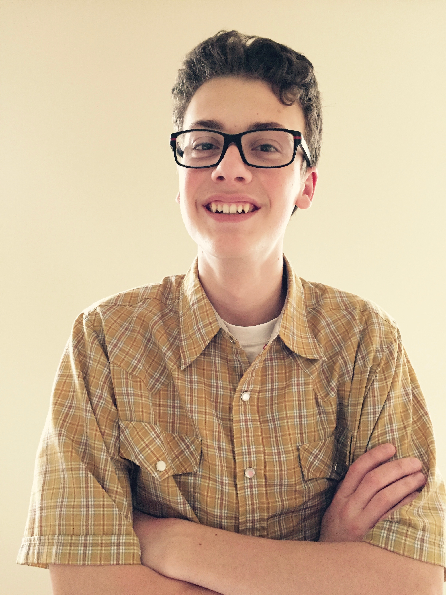

About Us
|  | Dakota Harward Web Developer/Public Relations |
Programming is one of Dakota's favorite things to do. He first started to program at the age of 12 with basic programming languages. From there he learned more and is now fluent in about 8 different languages. Dakota loves music and the beach. He hopes to work for NASA one day. |
 |
Trevor Jex Web Developer/Analytical Specialist |
Trevor has been programming since he was 10 years old. He first started with Java and has since become accomplished in HTML, CSS, Javascript, and Python. Trevor also loves to play the piano and play tennis, and loves music. |
 |
Cayden Lund Web Developer/Graphic Design |